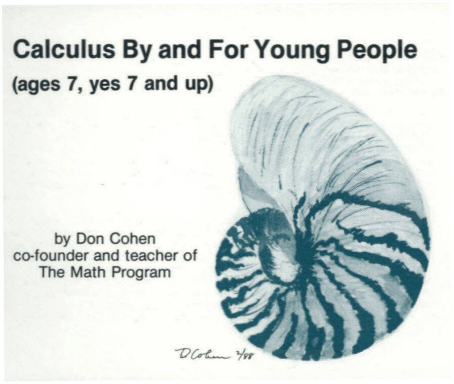
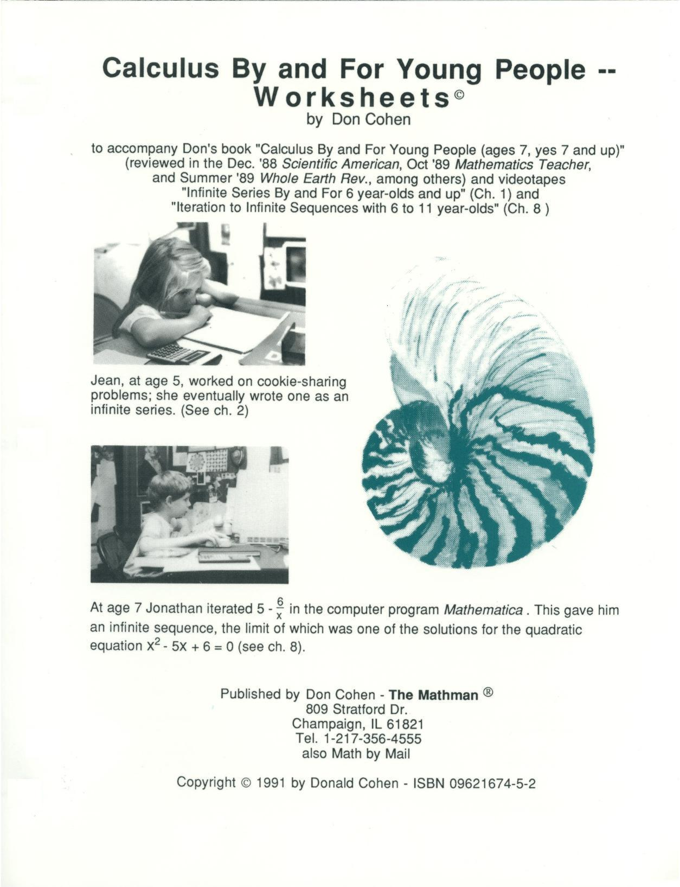
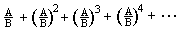
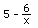

1. Book: "Calculus By and For Young People
(ages 7, yes 7 and up)" (CD-Rom)
ISBN 9780977949304; 179pp; 
The following is the review of this book by Phylis and Philip Morrison in
the Dec. '88 issue of Scientific American:
"Trying to divide six cookies fairly among seven people?
Third-grader Brad had the right idea: cut each one in half, share out as many as
you can; again halve the pieces not shared until there are pieces enough to
share, and continue. He quit at sixteenths, amidst lots of crumbs. But he could
see that everyone got 1/2 +1/4 + 0/8 + 1/16 + 1/32 + 0/64 . . . of a cookie. The
sum is not hard to express in terms of a more familiar series, once you notice
that the missing portion of unity is itself a geometric series for 1/[1 -
(1/8)]. Iteration is more powerful and more intuitive than dividing a round
cookie into seven equal parts.
This spiral-bound book the size of your hand reports with infectious
enthusiasm the work of many beginners in one fine teacher's class over the
decades, some of them highly gifted kids and some of them grown-ups with no
particular mathematical bent. All were on their way to an understanding of slope
and integral, natural logarithm and exponential. En route a good many famous
problems were encountered, among them the proof of the snail-like divergence of
the harmonic series (its first million terms add up to about 13.4, a sum given
here to a dozen decimals), the Fibonacci sequence in pineapples and that
glorious relation among, e, i, pi, 0 and 1.
The crossings between recreational mathematics, modern calculators and the
track of such pioneers as Newton and Euler make this breezy and personal
account, more notebook than book, good fun for the mathematically inclined young
person and helpful for any adults who seek freer and solid arithmetic
teaching".
Kodansha
Ltd. has sold 22,336 copies of the Japanese version of this book above, from
Aug. 20, 1998 (first day in bookstores)-Dec. 31, 2001 (3 1/3 years)!!
2. Worksheet book: "Calculus By and For Young People- Worksheets"(CD-ROM)
ISBN 9780962167478; 300+pp; 8 1/2x11"3

These 'worksheets', like none you've ever seen, parallel Don's book - with
the same flavor of concern for children's thinking and discoveries, making
the same important connections - but in addition
has:
- expanded sections on cookie-sharing, functions, graphs, solving equations,
iteration, i, and spirals
- questions which lead people to do the
mathematics themselves
- separate question and answer sections for each chapter
- more problems, carefully explained
- new student work
- explicit ways to use computer software to
investigate mathematics
- an outline for parent and teacher workshops
- over 320, 8 1/2x 11" pages
- expanded bibliography to include more materials and computer software
- an appendix in which Don analyzes the writing of essential computer
programs
The Table of Contents for Don's books 1 and 2:
- Chapter 1: 7 Year-Olds Do 
- Chapter 2: Brad's: Share 6 cookies with 7 people
- Chapter 3: Ian's Proof: Infinity = -1
- Chapter 4: The Snowflake Curve--Its Area and Perimeter
- Chapter 5: The Harmonic Series
- Chapter 6: On Thin Spaghetti and Nocturnal Animals (functions and graphs)
- Chapter 7: The Fibonacci Numbers, Pineapples, Sunflowers and The Golden
Mean
- Chapter 8: Solving Equations and Iteration
- Chapter 9: The Binomial Expansion and Infinite Series
- Chapter 10: Pi and Square Roots
- Chapter 11: Compound Interest to e and i
- Chapter 12: The Two Problems of The Calculus
- Chapter 13: Area Under Curves--The Integral
- Chapter 14: Slopes and The Derivative
- Appendix 1: The Important Mathematics
- Appendix 2: Activities For Parent/Teacher Workshops
- Appendix 3: On Writing Computer Programs and the Use of Calculators and
Computers
- Appendix 4: Sheets To Be Copied
- Bibliography--Books, Videotapes, Materials & Computer Software
3. Video #1: "Infinite Series By and For 6 Year-Olds and Up"
Running time: 24 minutes. This tape parallels
Chapter 1 in Don's books; now only on Don's 2-disk CD set with all of Don's
materials.
Titus (at left), at age 7, worked on
1/2+1/4+1/8+1/16...
On the tape, Jane, age 6, is shown coloring in the 8 x 8 square and ends up with
1/2 + 1/4 + 1/8 + 1/16 = 15/16. Will the square ever get filled in if we keep
going forever? What is this series and sequence of partial sums getting close
to? What is the smallest number? Don and Jane discuss these questions.
Don shows the work Kirsten, age 8, did on 1/3 + 1/9 + 1/27 + 1/81 = 40/81. She
wrote that this series goes to 1/2. Don and Jonathan, age 7, discuss his work on
2/5 + (2/5)^2 + (2/5)^3 + ... and his generalization of
"..this tape and my class's experience
with it, demonstrate that the math concepts presented here are not only possible
with young people but fun, engaging and eminently practical."-- D.
Elrick, teacher of a 4th-5th gifted class. "The videotape on infinite
series is an excellent inservice for teachers. The tape demonstrates how to
engage children's minds and shows alternate ways to study mathematics other than
workbook fill-in-the-blanks"--Marge Klein, Kg teacher.
"..seldom do I see (my) students so excited about their discoveries and
sharing their methods..What's more exciting, they want to get a hold of some
little kids and try it out on them!"--HS math teacher, CO.
4. Video #2: "Iteration to Infinite Sequences with 6 to 11
Year-Olds"
Running time: 38 minutes. This tape parallels
Chapter 8 in Don's books; now only on Don's 2-disk CD set with all of Don's
materials.
Don works with Jane, age 6, showing how she does the iteration of 2x, with an
application to population increase. They also iterate and obtain an interesting
graph.
Jonathan, age 7, shows how he
solves the quadratic equation x2 - 5x + 6 = 0
by using some algebra to get x =

, then iterates the function .
He uses a calculator to arrive at infinite sequences that approach 3, one of the
roots of the original equation. Jenny, age 11, shows her "wonderful,
wonderful, graph" of these iterations.
"This half-hour video will teach you
the basics of iteration even if you've never had an algebra course. Along with 6
and 7 year-olds on the video tape, you'll learn how to solve iteration problems
by hand or with a calculator."-- John Zarella
5. "A Map To Calculus"; ISBN 9780962167485 ; (also on Don's 2- Disk set with all his materials)
Where am I? Where can I start? Where am I going? Am I there yet? Don
has created what he calls "A Map to Calculus"- an overview, a
flowchart, a map, a unique way of looking at the interweaving of the important
mathematical ideas and activities leading young people to the calculus. This
15"x18" map (click here to see a piece of it)
is based on Don's books and videotapes. The starting points are around the
outside, all leading to the derivative and integral in the middle. The numbers
in the circles correspond to the chapter numbers in the books and videotapes.
7. "Changing Shapes With Matrices": ISBN
9780962167430 ; (also on Don's 2- Disk set)
Mathman Home
7.
Changing Shapes with Matrices